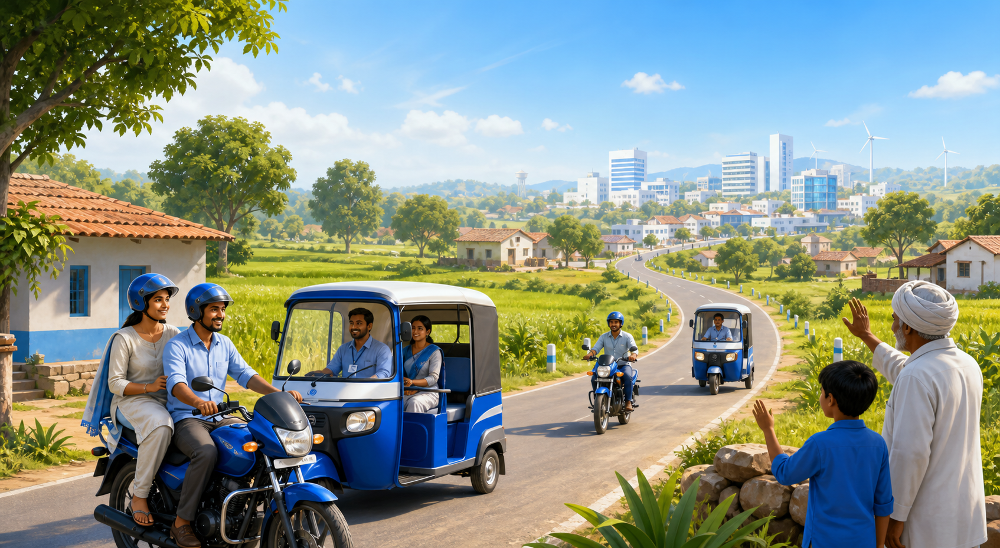

Rural-first mobility for India
Safe Journeys. Local Trust.
India's first rural-focused mobility platform connecting communities with safe, affordable, and reliable transportation.
Verified local drivers
Guardian trip sharing
Fair driver income

Live ride protected
Guardian link active
Local driver verified
Community trusted
Why Drop ME
Built for small towns, villages, and the people who keep them moving.
Low Driver Commission
Drivers earn more because we believe in fair income.
Family Trip Sharing
Share live trip details with parents and guardians.
Verified Local Drivers
Travel with trusted drivers from your own community.
Affordable Pricing
Fair pricing designed for rural and small-town commuters.
Safety First
SOS button, emergency contacts, and ride transparency.
Rural Connectivity
Serving villages, mandals, and small towns that are often underserved.
How Drop ME works
A simple ride flow made for everyday rural travel.
Drop ME exists to make transportation in rural India safer, more affordable, and more trustworthy by connecting riders with verified local drivers while ensuring fair earnings for driver partners.
- 1Open App
- 2Enter Destination
- 3Choose Driver
- 4Ride Safely
- 5Reach Destination
Passenger safety
Protection that families can understand and trust.
Guardian Notifications
Trusted contacts receive trip updates when the ride starts and ends.
Verified Drivers
Driver identity and vehicle details are checked before onboarding.
Emergency SOS
Quick emergency alerts can share ride details with selected contacts.
Trip History
Past rides stay easy to review for riders, families, and support teams.
Route Tracking
Clear route visibility helps reduce anxiety during longer local trips.
Secure Ride Records
Ride details are stored responsibly for transparency and support.
Driver partners
Fairer work for local drivers who know their community.
Community voices
Designed around real rural mobility needs.
"I can share my ride with my parents when I travel for college classes."
Ananya, Student"Knowing the driver is verified and local makes daily travel feel safer."
Ramesh, Parent"Low commission means my work is respected and my income is better."
Kiran, Driver PartnerFAQ
Questions riders and drivers ask first.
How does Drop ME keep rides safe?
Drop ME focuses on verified local drivers, guardian notifications, route tracking, SOS support, and clear ride records.
Is pricing affordable for rural commuters?
Yes. Pricing is designed for short village routes, small-town travel, and daily commuter needs while keeping driver earnings fair.
How are drivers verified?
Driver identity, vehicle details, local references, and onboarding checks are used before drivers can accept rides.
How do I book a ride?
Open the app, enter your destination, choose an available verified driver, and share trip details with a guardian if needed.
Get started